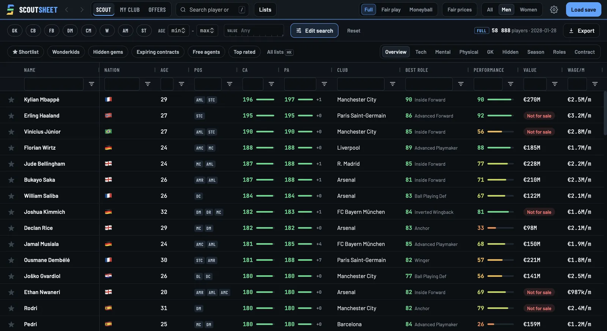
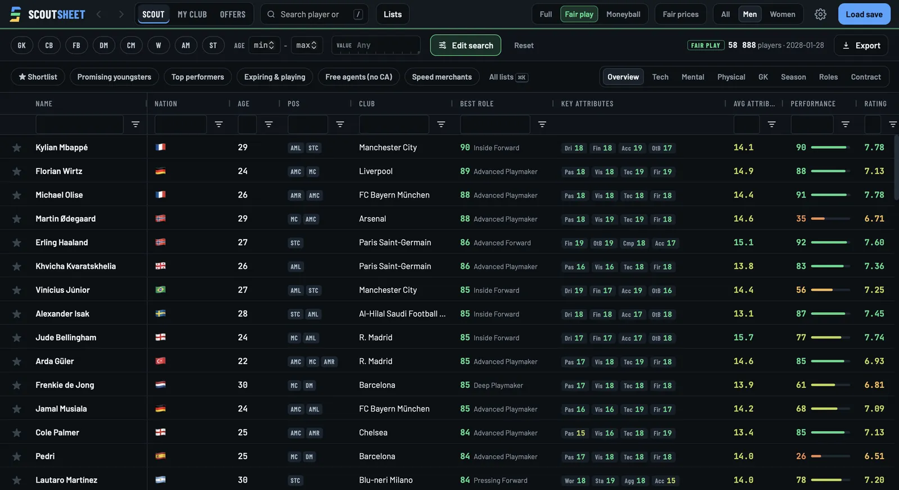
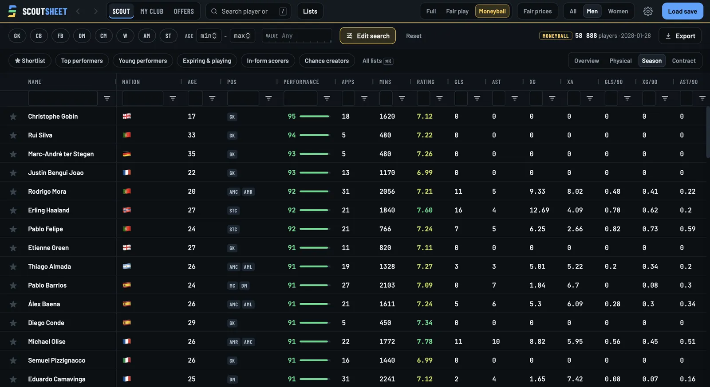
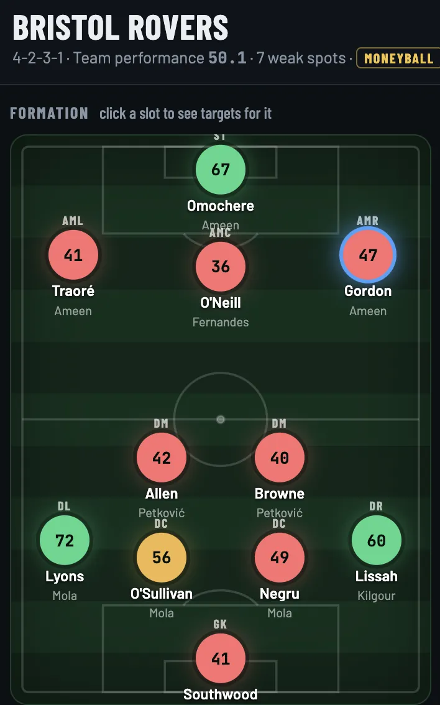
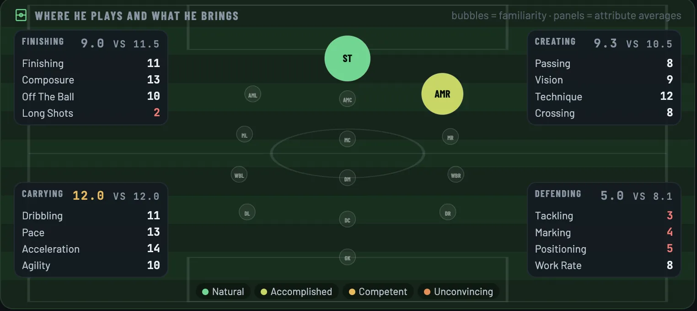
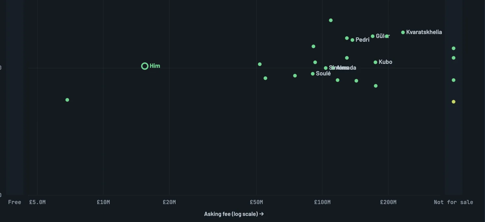

01
Full
The whole truth.
Current and potential ability, hidden attributes, personality, and a written scouting report on every player. Wonderkids in seconds.
Free scouting tool for Football Manager 26 · v0.4.8
ScoutSheet pulls every player out of your own FM26 save and puts them in one place. Scout them in the app, Moneyball style if you like, or export the data and dig in with your own tools. Find the players who are better than their price.
Free. Ready in about three minutes.
ScoutSheet runs on Windows and Apple Silicon Macs.
Three ways to scout. Pick one, the screen switches.



FullCA and PA, straight from the save.
Every number on this page comes from one real Bristol Rovers save, January 2028. Your player count depends on your database.
How it works
Football Manager keeps every player's numbers locked inside your save. ScoutSheet opens it up, on your own computer, and hands the data back to you.
01
Pick your FM26 save. ScoutSheet reads it in about a minute and never changes it. Nothing is uploaded.
02
Every player in the game, all 75,167 in our test save: attributes, season stats, contracts, fees, wages. Men and women.
03
In the app: sort, filter and compare everyone, Moneyball included, then build your shortlist.
Or anywhere else: export any list, with every column, to a spreadsheet file (CSV) and open it in Excel, Google Sheets or your own tools.
Run the window your way
01
The whole truth.
Current and potential ability, hidden attributes, personality, and a written scouting report on every player. Wonderkids in seconds.
02
Find them yourself.
Only what your scouts would tell you in the game. No potential, no hidden attributes. Your save stays a challenge.
03
Only results count.
Attributes switched off. Players are judged on what they actually do in matches, and put next to what they cost.
One click switches modes. Same save, same players, different eyes.
Your perfect window
ScoutSheet rates every position in your team and shows the weakest first. Click one and get the players who would make it better, with what they cost.

Where he plays, what he's good at, and how he compares with other players in his position. His stats, his price, his contract and similar players are one tab away.

Every player gets a fair price, based on similar players in your own save. Then you see who sells for far less than he's worth.
Here: Nico Paz at £15M, 59% under his fair price, while players at his level cost £100M and more.

Transfer window's open
Free. Read-only. Works offline. Your save never leaves your computer.
On Mac, the app is signed and notarised by Apple, so it opens like any other app. On Windows, SmartScreen asks you to confirm once. The code is public on GitHub if you want to check what it does.
ScoutSheet.exe. If Windows says it protected your PC, click More info.ScoutSheet-mac.zip.Apple Silicon Macs only (M1 or later). Intel Macs aren't supported.
Before you ask
No. The save is only read, never written. ScoutSheet makes its own copy of the player data on your computer and works from that.
Only if you want it to be. Fair play hides CA, PA, hidden attributes and personality, so you scout with what a scout shows you in game. Moneyball hides attributes entirely and judges players on what they do in matches.
What a player should cost, worked out from similar players (same kind of profile, age, level and contract) in your own save. ScoutSheet then tells you how far under or over it he is selling. In Moneyball, a player needs about ten full games (900 minutes) before he gets one.
Yes. Any list in the app exports to a CSV file, which opens in Excel, Google Sheets, Numbers or any data tool you like. It's your save, so it's your data.
Football Manager 26 saves (.fm). The app lists the ones it finds. Loading another save replaces the previous one.
Yes. Every player in the save, men and women, with a switch between them.
No. Everything runs on your computer. At launch it asks GitHub whether a newer version exists. If there is, one click installs it and restarts the app. You can turn the check off in Settings. Nothing about you or your save is sent.
Microsoft's signing costs a yearly fee, which a free project doesn't pay, so SmartScreen asks once. Click More info, then Run anyway. The Mac version is signed and notarised by Apple and opens without a warning.
No. It's free and open source. No account, no subscription, and the app itself has no tracking. This website counts visits with Cloudflare Web Analytics: no cookies, nothing about you personally.